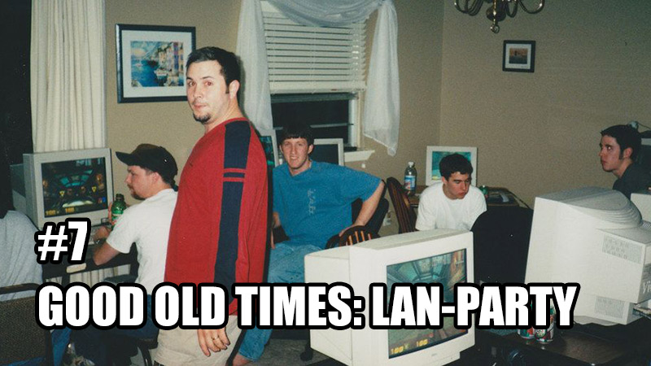
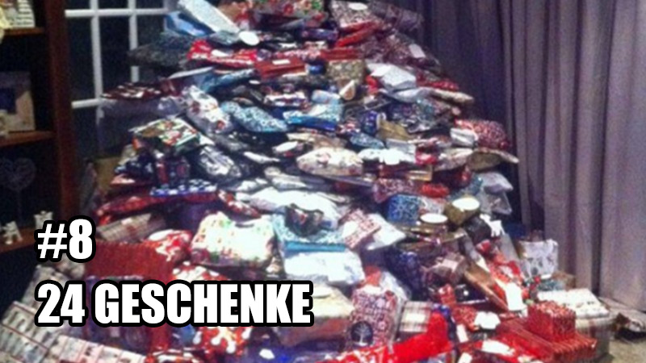

Jeder Mann sehnt sich danach in verschiedenen Momenten seine Männlichkeit ausleben zu können. Doch die heutige Gesellschaft bietet kaum noch Möglichkeiten. Die Frauen emanzipieren sich und Dienstleistungen sowie Technologien lassen den Mann einfach nur noch ein “normales” Lebewesen sein. Wir wollen dir mal wieder dieses Lebensgefühl zurückgeben! Ein einzigartiger Tag, den du für immer in Erinnerung behalten wirst. Ein wahres Outdoor-Erlebnis bei dem du allein durch Muskelkraft und Anstrengung überzeugen kannst!
Denn: Dominiks Mutter braucht Hilfe. Die Holzmassen im Holzstapel häufen sich. Dominik und sein Vater haben keine Lust. Die Mutter nicht genug Kraft. Das ist deine Chance! Ein Tag: Holzspalten-Extrem! Axt und Bier gehören dir und Familie Paur gibt durchgehend wertvolle Tipps — ein richtiges Coaching durch den Tag.
Viel Spaß!
Vorweg: Sie heißt Schoko, Queen Schoko oder Schokolade, aber nie Choco, das ist ihr wichtig!
Wir wissen, dass du sie heimlich verehrst — Katzen und ganz besonders Schoko. Der einzig wahre Tiger unter den Haustigern. Ein magisches und anmutiges Wesen zugleich, das von dir nun endlich besucht und gestreichelt werden darf. Aber keine Angst: Damit du beim Spielen und Kuscheln keine Kratzer davon trägst wird Karin permanent auf euch aufpassen und einschreiten, sollte es zu einer gefährlichen Situation kommen. Doch das soll noch nicht das Highlight gewesen sein! Als Andenken an diesen ehrwürdigen Tag folgt ein exklusives Fotoshooting à la Tiger King. Ein Spektakel für das Leute in anderen Ländern viel Geld ausgeben müssen.
Viel Spaß!
Lachen ist das wichtigste Gut im Leben. Es ist gesund. Es trainiert die Bauchmuskeln. Hilft gegen Stress. Bären lachen übrigens nicht. Wirkt wie Kokain. Ist ein Reflex. Und es macht sexy. Du bist voll funny! Immer up to date und als early adopter mit den neuesten Memes und GIFs aus dem Internet vertraut. Es gibt nichts, das du nicht kennst. Wir haben uns lange Gedanken gemacht, wie wir deinen Humor auf das nächste Level heben können, wie wir noch mehr aus dem funny Guy herausholen, den wir so schätzen. Auch du musst dich weiterentwickeln und wir wollen dein Level an Spaß übertrumpfen.
Wie? Ganz einfach. Du darfst eine Stunde lang 9GAG mit uns durchscrollen, das wird mega! Vermutlich aber ohne Tan, weil er kennt die ganzen GIFs ja schon von Reddit. Das wäre ja sonst mega langweilig für ihn.
Viel Spaß!
Erinnerst du dich noch an die sonnigen Tage an denen wir gemeinsam mit den Schlauchbooten über die Alster schipperten? Mal war man nur zu zweit und mal waren auch coole Leute dabei. Es ist einfach immer wieder schön und ein Erlebnis. Wenn die Sonne und der Sommer sich wieder von der richtigen Seite zeigen, soll auch in diesem Jahr wieder ordentlich Schlauchboot gefahren werden. Es ist schon alles vorbereitet. Die Boote liegen im Keller und die Taschen sind gepackt. Du musst es nur noch alles aus dem Keller zum Alsterlauf tragen und aufpumpen. Denn erst dann können Karin, Tan und Dominik losfahren. Denn zu viert ist es meistens schon recht eng und wir wollen ja, dass es ein schönes Geschenk für dich wird.
Viel Spaß!
Diese eine Corona-Geschichte hat uns alle fest in der Hand. Besonders die Leute, die nicht mehr rechtzeitig vor dem Shutdown beim Friseur waren, trifft es besonders hart in der Krise. Der eine lässt einfach wachsen, der nächste geht auf Glatze oder Stoppelschnitt und einige greifen beim Teleshopping endlich zu und kaufen den Staubsauger mit Haarschneidemaschinenaufsatz (krassestes Alman-Wort ever). Aber auf diese Amateur-Moves sind wir nicht angewiesen.
Du sollst trotz Corona aussehen, wie ein sexy Motherfucker! Und wofür hat man gute Freunde? Genau, um dir einen Friseur-Besuch zu ermöglichen — kostenfrei natürlich! Du weißt ja bereits, wie gut Karin Haare schneiden kann und kannst dir also sicher sein, dass sie dir eine gute Frisur verpassen wird. Aber wir wollen ja auch gerne wissen, wie Dominik und Tan im Haareschneiden sind. Außerdem ist es ein Geschenk von uns allen. Karin übernimmt daher die linke Kopfhälfte und Dominik die rechte. Tan färbt, aber keine Sorge, die Farbe darfst du dir natürlich aussuchen. Soll ja schließlich gut werden und dir gefallen.
Viel Spaß!
Tan als Asiate ist per se erstmal unschlagbar. Denn wie wir alle wissen, sind Asiaten besser, besser in allem was sich ein Europäer vorstellen kann. Und gerade bei Tans Leidenschaft stellt er einen unfassbaren Endgegner dar. Du sollst enabled werden dich mit ihm auf eine Stufe zu stellen. Was Bowser für Mario ist, wird Martin für Tan. Da es aber nicht möglich sein wird, dass du dies in deiner Lebenszeit mit alleiniger Kraft erreichen kannst — immerhin hast du nichtmal die notwendige Spielekonsole dafür oder eben die krassen Asia-Skills — geben wir dir das entsprechende Power-up.
Du darfst Tans FIFA20-Account abkaufen, dabei hat er dir einen besonderen Freundschaftspreis von 350€ ausgerechnet. Außerdem nimmt er hier das Opfer auf sich, wieder mit einem neuen Account starten zu müssen. Das macht er aber gerne, schließlich geht es hier nur um dich und deinen Fame.
Viel Spaß!

Es sind die schönsten Erinnerungen unserer Jugend. Den 20kg schweren Tower-PC zu einem Freund nach Hause schleppen, um dann mit mehreren Leuten Counter-Strike, Age of Empires oder andere Multiplayer-Games zu zocken. Wir sind älter geworden, aber definitiv noch nicht zu alt für diesen Scheiß. Also wollen wir dir die Chance geben alles nochmal aufleben zu lassen! Was man bei all dem tollen Erlebnis nie vergessen darf ist, dass man erstmal ca. 2 Stunden brauchte, damit auch endlich alle Rechner miteinandern verbunden waren und es dann immer noch den einen Freund gab, dessen Rechner nicht verbunden werden konnte. Im Sinne der puren Nostalgie soll natürlich auch dies nicht vergessen bleiben und so werden Karin, Tan und Dominik zusammen spielen und du kannst uns über die Schulter schauen, Chips essen sowie früher ins Bett gehen. Achja, die LAN-Party findet bei dir statt. Vielleicht kriegen wir aber auch kurzzeitig eine Verbindung hin, sodass du dich wenigstens mit einem Porno-Trojaner von einem unserer Rechner infizieren kannst.
Viel Spaß!

Geschenke sind immer etwas Gutes und 24 Geschenke sind 24x besser. Es fällt aber manchmal schon schwer auch nur ein gutes Geschenk zu finden. Und welches Budget ist passend? Man will ja schließlich auch nicht zu wenig oder zu viel ausgeben. Geschenke-Shopping und sämtliche andere Organisation drumherum kann daher extrem anstrengend sein. Ein oder sogar 24 Geschenke bekommen, ist hingegen gar nicht anstrengend und freut einen mega. Du hast es vielleicht schon erahnt: Ein Adventskalender steht auf dem Programm. Aber keine Sorge, dieses Jahr wird dir Paur mal als Revanche die Arbeit abnehmen. Er bestimmt für dich das Budget und überlegt sich 24 tolle Geschenke, die du kaufst und für ihn in einem Adventskalender aufbereitest. Vielleicht einfach als Link zu seiner Amazon-Wishlist.
Viel Spaß!
Als gute Freunde muss man jederzeit für den anderen da sein, ihn unterstützen und auch bei schwierigen Problemen helfen. Aber wie hilft man jemandem, der zum Glück gesund ist, alles kann und Dinge im Überfluss besitzt? Am besten indem man ihm hilft Dinge im Überfluss loszuwerden. Denn der aktuelle Trend geht zum Minimalismus. Und als gute Freunde nehmen wir uns gleich dem schwierigsten Thema an: deinem Datenvolumen! Wir helfen dir dabei dein Datenvolumen aufzubrauchen. Natürlich zum Beginn der Abrechnungsperiode, damit es für eine lange Zeit aufgebraucht ist. Denn du sollst ja mit dem Trend gehen.
Viel Spaß!
Es gehört zu deinem Job und zu deinem Lifestyle immer die neuesten Technologien zu kennen, auszuprobieren und ggf. sogar zu kaufen. Dafür aber jedes Jahr mehrere Messen zu besuchen oder unzählige Bestellungen und Retouren bei Amazon auszulösen kann doch nicht die Lösung sein. Wir haben uns lange Gedanken gemacht, wie es besser gehen kann. Wie kann man dir neue Technologien zeigen und vielleicht sogar direkt ausprobieren lassen? Das Ganze ohne, dass du dafür Hamburg verlassen musst? Außerdem braucht man ja am besten auch noch Fachexperten, die einem Dinge über das Produkt erklären können.
Winterhude und Uhlenhorst werden für einen Tag deine Tech-Hotspots. Tan und Dominik stellen dir exklusiv ihre Staubsauger vor, zeigen dir jedes Detail und erklären Tipps&Tricks, wie auch du zum Profi werden kannst. Nach der Einweisung geht es dann aber erst richtig los. Realitätsnahe darfst du die Staubsauger selber bedienen, indem du beide Wohnungen gründlich und komplett saugst. Wir sind auf deine Erfahrungen und Feedback gespannt, denn wir wollen wissen, welcher Staubsauger dir am Ende besser gefallen hat.
Viel Spaß!
Hinweis Dominik: Bitte vorsichtig und nirgends gegenstoßen.
Hinweis Tan: Vorsicht vorm Einsaugen kleiner Kinder.
Hmmm...lecker, lecker. So ein Abend mit Freunden bei dem man gemeinsam gemütlich zusammensitzt, isst und den ein oder anderen Wein (Tan: Wasser, Dominik: Cola, Karin: Tee) zu sich nimmt. Dabei macht man ja auch mal das ein oder andere 3-Gänge-Menü. Meistens ist aber so ein Abend für eine Person nicht so gemütlich, da sie der Gastgeber ist und das Essen kochen muss. Daher machen wir den Abend bei dir! Du darfst für uns deine Kochkünste auspacken und dein Taco-Equipment anschmeißen. Vorspeise und Nachtisch darfst du gerne frei wählen. Aber bitte vorher Unverträglichkeiten und Geschmäcker abfragen, es mag ja schließlich nicht jeder alles oder darf alles. Wir sind jetzt schon hungrig und freuen uns mega drauf.
Viel Spaß!
Im letzten Sommer war VanMoof eine wichtige und große Kaufentscheidung für dich. Endlich wieder ein tolles Rad, nachdem irgendwelche Opferkinder dein altes Lieblingsrad geklaut haben. Seitdem war VanMoof dein stetiger Begleiter, der leider bei unserer letzten Fahrrad-Tour nicht der treueste war. Wir waren sehr traurig als du umkehren musstest und wir die geplante Tour alleine fahren mussten. Aber aufgeschoben ist nicht aufgehoben, also warum nicht einen zweiten Versuch starten.
Diesmal wollen wir aber vorsorgen, sodass du auf jeden Fall teilnehmen kannst. Wir besorgen dir daher ein zuverlässiges Fahrrad, das regelmäßig gewartet wird und erstklassigen Fahrkomfort bietet. Ein Stadtrad. Genau genommen ein Stadtrad-Lastenrad. Denn was wäre eine Fahrradtour auf einem tollen Rad, wenn man seine Freunde nicht mitnehmen kann und zwar vorne im Lastenkorb.
Viel Spaß!